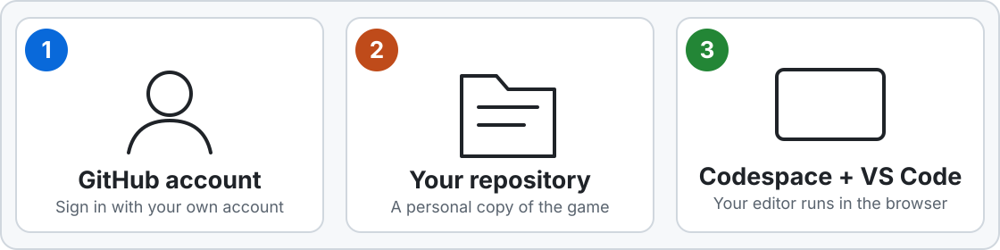
Your account, your repository, and the cloud editor. This page gets you ready before the session. Nothing is installed on your computer. Everything runs in your browser. It takes about 20 minutes.
Jump to: Survey Account Repository Codespace Copilot Clean up
0 Fill in the surveyIt takes a few minutes and helps us prepare.
Fill in the pre-workshop survey
1 Create a GitHub accountSkip this step if you already have an account. Otherwise create a GitHub account .
Choosing a username
Pick something you will still like at 60. It appears on every commit you ever make.
Lowercase letters and digits only, hyphens if you must. Short enough to type.
No institution, no year, no job title. You will outlive all three.
Based on your real name (jsmith, j-smith) or a memorable handle, both work. “xkcd ” started as a random unpronounceable string Randall Munroe used as a username, and it has served him for twenty years.
Taken? Add something stable, not jsmith2026. Email Sign up with a personal address you will keep after leaving your institution. Add your institutional address later as a secondary email. Students are encouraged to apply for the GitHub Student Developer Pack using their institutional address. It is not required for this workshop.
Two-factor authentication GitHub requires it. Register a passkey (Touch ID, Face ID, Windows Hello) under Settings > Password and authentication . Save your recovery codes.
Email privacy Go to Settings > Emails . Tick Keep my email addresses private and Block command line pushes that expose my email . You do not need to copy the noreply address. Codespaces uses your GitHub identity automatically.
2 Create your repository from the template
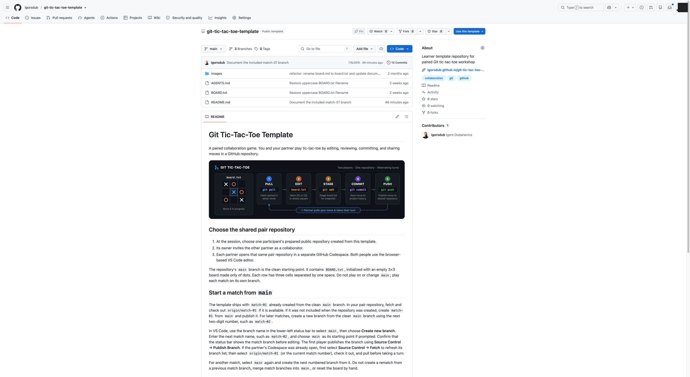
1. Open the template repository. 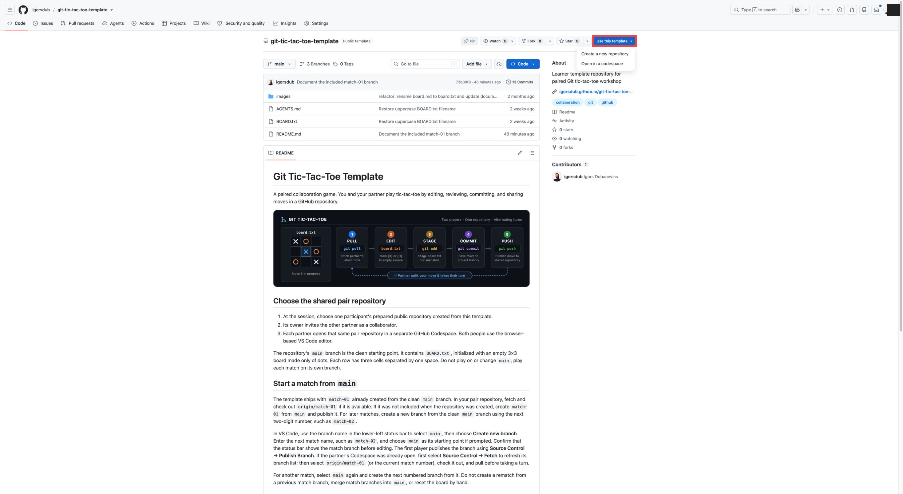
2. Click Use this template . 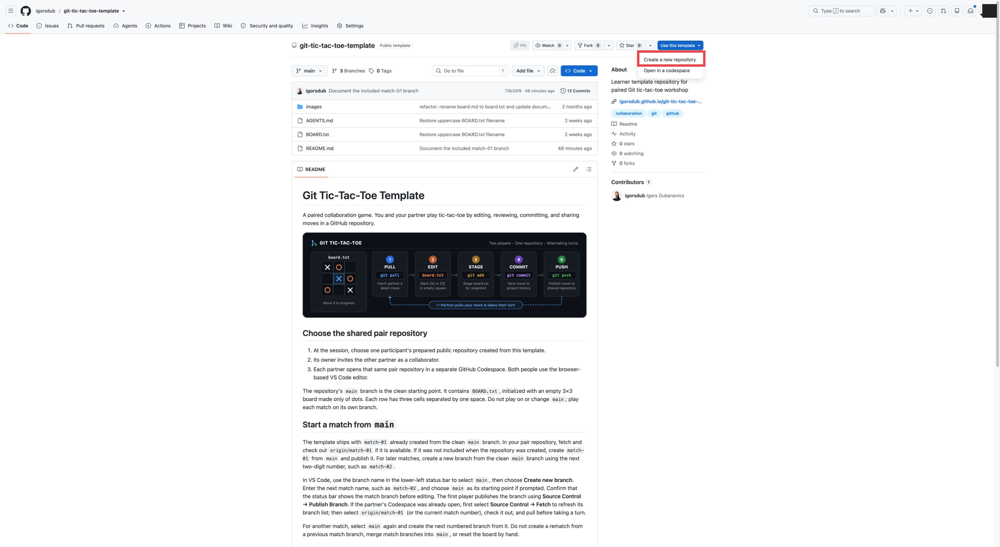
3. Choose Create a new repository . 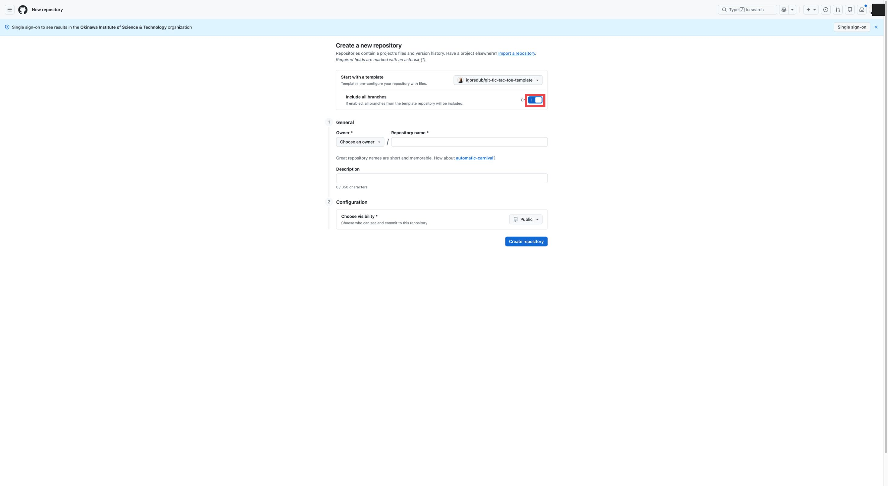
4. Enable Include all branches . 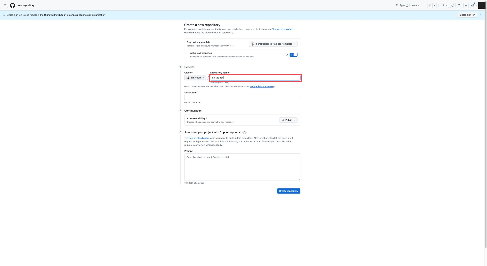
5. Select your own account as owner and choose a repository name, for example tic-tac-toe. 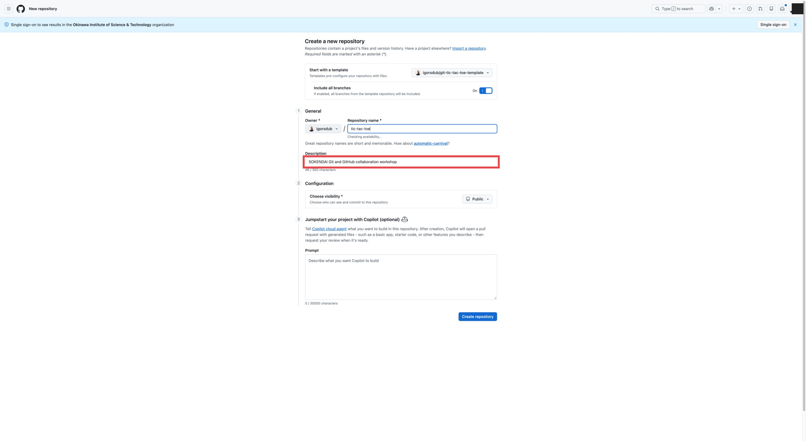
6. Enter the exact workshop description. 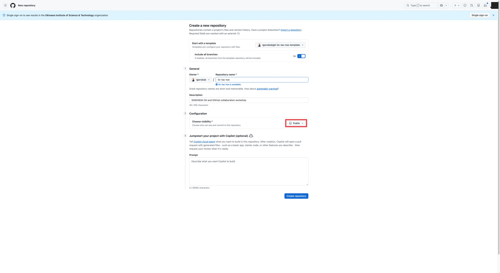
7. Choose Public . 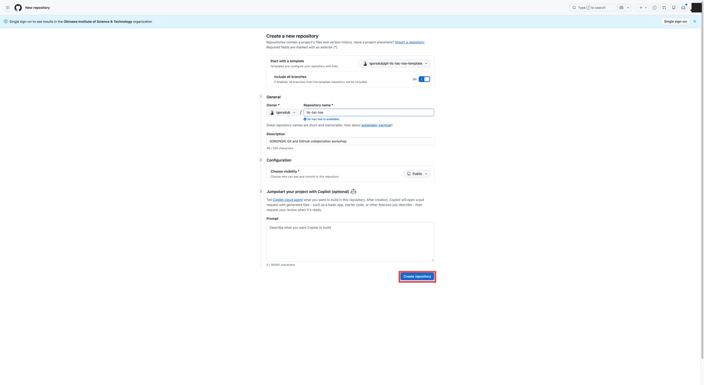
8. Click Create repository . Template repository: igorsdub/git-tic-tac-toe-template .
Click Use this template , then Create a new repository . Turn on Include all branches before entering the repository name or description. This includes the workshop's match-01 branch. Choose your account as the owner. Enter a repository name, for example tic-tac-toe. Enter the exact description SOKENDAI Git and GitHub collaboration workshop . Choose Public visibility. Click Create repository .
3 Open it in Codespaces
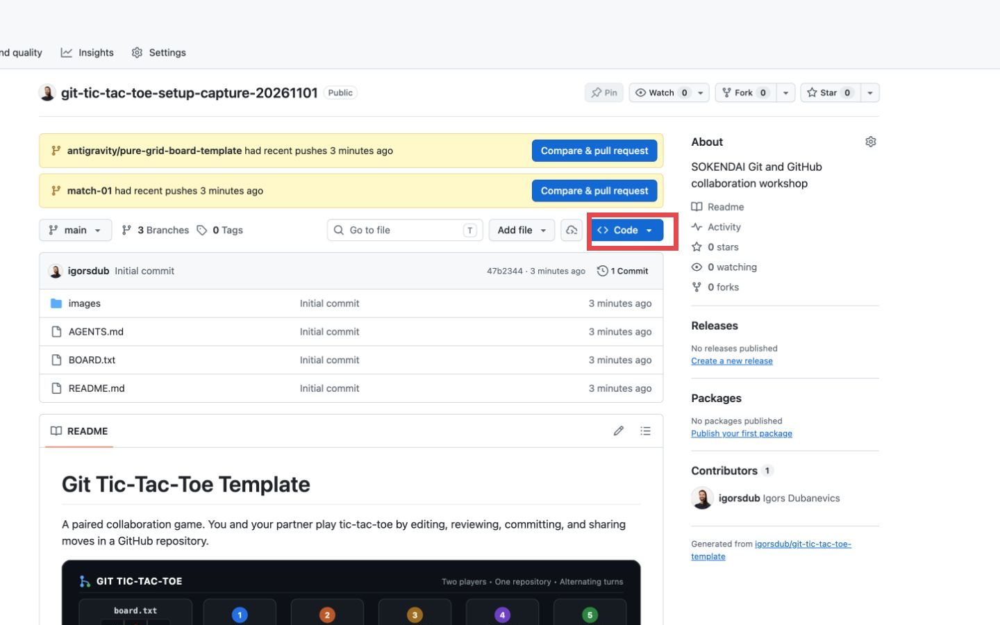
1. Click the green Code button. 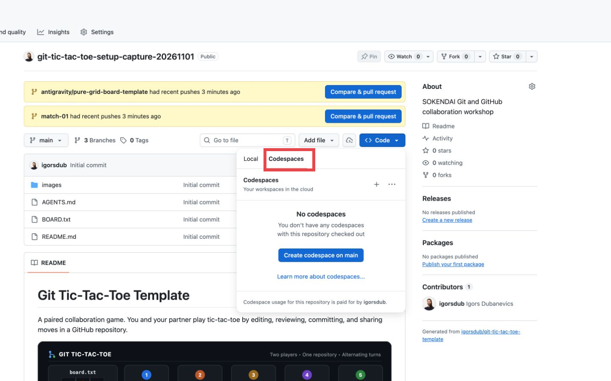
2. Open the Codespaces tab. 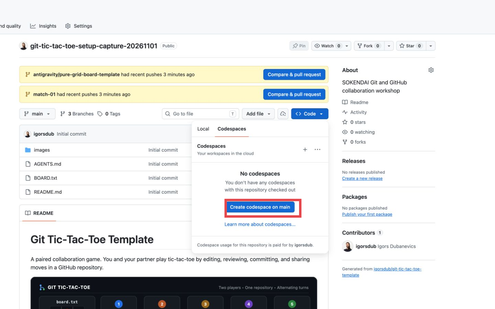
3. Click Create codespace on main . 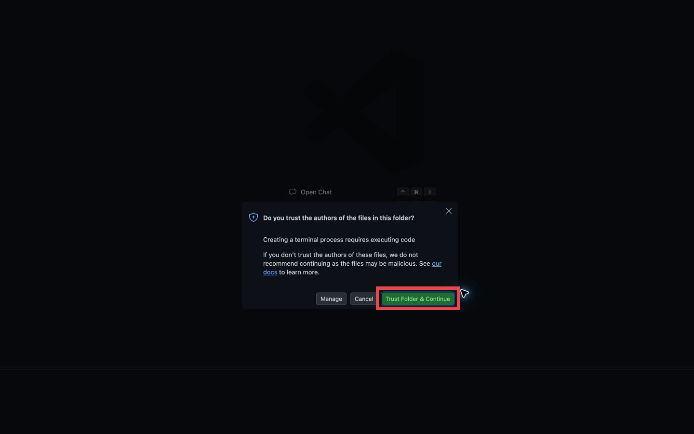
4. If prompted, trust the repository you created. 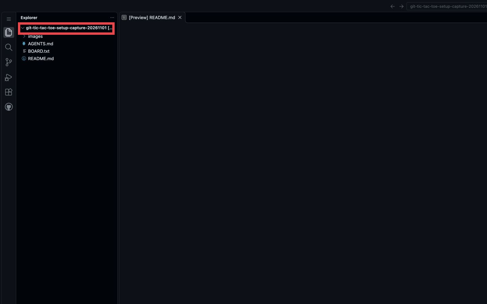
5. Wait for the editor to load. Click the green Code button on your repository. Click the Codespaces tab in the menu. Click Create codespace on main . Wait at least about a minute. If the Codespace is still starting, keep waiting. If asked whether to trust the repository, click Trust Folder & Continue . Continue only when the Codespace editor is fully loaded and ready.
A Codespace is a computer GitHub runs for you, with VS Code in a browser tab and your repository already inside. Nothing to install.
Personal accounts get 120 core-hours a month free, far more than the workshop needs, which is why the last step is deleting it.
Trust prompt When VS Code asks whether to trust the folder, choose Trust Folder & Continue . Only trust repositories you created yourself.
4 Check CopilotCopilot Chat can take a while to load. Wait until Chat has finished loading before selecting Ask .
Wait for the Codespace editor to be fully loaded and ready. This may take about a minute or longer. Open the loaded Chat view. Open the Chat mode selector and click Ask . Click the message box and type exactly What does this repository do? . Click Send . Wait until Copilot finishes and the complete answer is visible.
You are done when Chat has finished responding. Do not edit or commit anything.
If Chat is missing or does not respond Codespaces and Copilot access are separate. If Chat is still loading, wait for it to finish. For an access or usage-limit message, follow the message or ask the facilitator. If a response fails and explicitly offers a retry, wait until generation has stopped and retry once. If it fails again, ask the facilitator. You can still take part; a manual rematch path is available with facilitator help.
5 Delete your CodespaceA running Codespace uses your monthly allowance. Delete this practice Codespace to stop using it; keep your repository.
Return to GitHub . In the left navigation, click Codespaces . Find the Codespace you just created and click its ... menu. Click Delete . In the confirmation dialog, click Delete to confirm. Check that the Codespace is no longer listed. Keep your repository. You will open a fresh Codespace during the workshop.